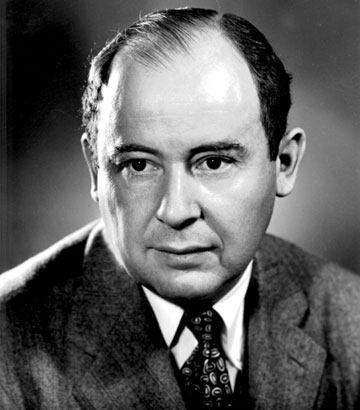

Введение

Джон фон Нейман (1903–1957) — выдающийся венгерско-американский математик и физик-универсал, внесший революционный вклад в квантовую механику, теорию игр, экономику, ядерную физику (Манхэттенский проект) и информатику. Если люди отказываются верить в простоту математики, то это только потому, что они не понимают всю сложность жизни
- говорил Джон фон Нейман
Краткая биография
Джон фон Нейман (1903–1957) — гениальный венгеро-американский математик и физик, совершивший революцию сразу в нескольких областях науки. Родился в Будапеште, с детства поражал окружающих феноменальной памятью и математическим талантом, а в 1930 году переехал в США, став одним из первых профессоров знаменитого Института перспективных исследований в Принстоне. Он вошел в историю как создатель «архитектуры фон Неймана» — базового принципа совместного хранения данных и программ в памяти, который до сих пор лежит в основе работы большинства современных компьютеров. Кроме того, ученый заложил математический фундамент квантовой механики, вместе с Оскаром Моргенштерном создал теорию игр для моделирования экономических процессов, а в годы Второй мировой войны сыграл ключевую роль в Манхэттенском проекте, рассчитав взрывное устройство для первой атомной бомбы. Обладая уникальной скоростью мышления, фон Нейман внес фундаментальный вклад в геофизику, метеорологию и теорию автоматов, оставив колоссальное научное наследие, несмотря на раннюю смерть от рака в возрасте 53 лет.